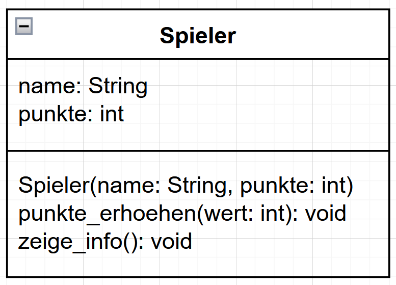

Überblick › LB 4/5 OOP und Softwareentwicklung
4.5 Methoden schreiben und aufrufen
In der objektorientierten Programmierung besteht ein Objekt nicht nur aus Daten (Attributen), sondern auch aus Verhalten. Dieses Verhalten wird durch Methoden beschrieben. Eine Methode ist eine Funktion, die zu einem Objekt gehört und meist auf dessen Attribute zugreift.
Schritt 1: Methode aufrufen – objekt.methode() heißt self = objekt
Ein Hund hat einen Namen und kann bellen. Im Video verfolgst du genau, wie Python den Aufruf luna.bellen() ausführt. Achte im Speicherbild darauf, wo die Methoden liegen (im Objekt oder in der Klasse?) und auf welches Objekt der orange Pfeil self zeigt – erst bei luna, dann bei einem zweiten Hund. Kurz erklärt wird auch der f-String f"{name} bellt!".
Zum Nachlesen steht der Ablauf mit Code und Testfällen in Beispiel 1:
Kurz geprüft 1: Wer ist self? AFB I
Nach bello = Hund("Bello") wird Hund.bellen(bello) aufgerufen. Was wird ausgegeben, und auf welches Objekt zeigt self dabei? Wie schreibt man denselben Aufruf in der üblichen Kurzform?
Lösung zeigen
Ausgabe: Bello bellt!. self zeigt auf dasselbe Objekt wie bello. Die Kurzform ist bello.bellen() – dort setzt Python das Objekt vor dem Punkt automatisch als self ein.
Weiter mit Schritt 2: Methoden mit Parametern →
Schritt 2: Methoden mit Parametern
Methoden können zusätzlich eigene Parameter bekommen – genau wie normale Funktionen. Mit return liefern sie ein Ergebnis an den Aufrufer zurück. Achte im Video darauf, wie die Werte beim Aufruf r1.addiere(5, 3) auf self, x und y verteilt werden und was Python meldet, wenn ein Argument fehlt.
Zum Nachlesen: der Rechner
class Rechner:
def __init__(self, name):
self.name = name
def addiere(self, x, y):
return x + y
r1 = Rechner("Taschenrechner")
ergebnis = r1.addiere(5, 3)
print(ergebnis) # Ausgabe: 8Methoden in UML-Diagrammen

In UML-Diagrammen werden Methoden mit ihren Parametern und dem Rückgabetyp angegeben, z. B. + addiere(x: int, y: int): int.
Kurz geprüft 2: Werte verteilen AFB I
Nach r2 = Rechner("Schul-TR") wird r2.addiere(7, -2) aufgerufen. Welche Werte haben self, x und y, und was wird zurückgegeben? Was passiert bei r2.addiere(1, 2, 3)?
Lösung zeigen
self ist r2, x = 7, y = -2; zurückgegeben wird 5. Bei drei Argumenten meldet Python TypeError: Rechner.addiere() takes 3 positional arguments but 4 were given – self wird mitgezählt, weil Python es automatisch übergibt.
Weiter mit Schritt 3: Methoden ändern den Zustand →
Schritt 3: Methoden ändern den Zustand
Die Attributwerte eines Objekts nennt man seinen Zustand. Manche Methoden ändern ihn (verändernde Methoden), andere lesen ihn nur (sondierende Methoden). Achte im Video darauf, wann sich der Punktestand im Speicherbild ändert – und warum None ausgegeben wird, wenn man das Ergebnis einer Methode ohne return weiterverwendet. Kurz erklärt wird auch x += 5.
Zum Nachlesen: Methoden, die Attribute verändern
Der vollständige Ablauf mit beiden Fallen steht in Beispiel 2:
Kurz geprüft 3: Was kommt zurück? AFB I
Was gibt dieses Programmstück aus? s2 = Spieler("Tom", 4), dann a = s2.punkte_erhoehen(6) und print(a, s2.punkte)
Lösung zeigen
Ausgabe: None 10. Die Methode hat den Zustand verändert (aus 4 werden 10 Punkte), liefert aber ohne return den Wert None.
Danach: Aufgabe 4.5.1 – Methoden unterscheiden, und Aufgabe 4.5.2 – Auto mit Tankanzeige.
Praxisbezug: Methoden als Schnittstelle
Alltag: Die Tasten deiner Kaffeemaschine sind wie Methoden: „Espresso“ oder „Entkalken“ lösen genau festgelegte Abläufe aus, ohne dass du die Mechanik im Inneren kennen musst.
Beruf: In Softwareprojekten einigen sich Teams zuerst auf die Methoden einer Klasse – Name, Parameter, Rückgabewert – und dokumentieren sie. So können mehrere Personen gleichzeitig arbeiten: Die einen implementieren die Methoden, die anderen nutzen sie schon. Automatisierte Tests (Unit-Tests) prüfen anschließend jede Methode einzeln.
Zusammenfassung
Methoden stehen einmal in der Klasse und werden von allen Objekten gemeinsam genutzt. Beim Aufruf objekt.methode(…) wird das Objekt vor dem Punkt zu self, die übrigen Argumente werden der Reihe nach auf die Parameter verteilt. Verändernde Methoden ändern über self den Zustand des Objekts, sondierende Methoden lesen ihn nur. Ohne return liefert eine Methode None.
Das Wichtigste
Methode: Beschreibt, was ein Objekt tun kann. Sie wird wie eine Funktion innerhalb der Klasse definiert, mit dem ersten Parameter self für das aufrufende Objekt.
Aufruf: Mit der Punktnotation objekt.methode(argumente); self wird dabei automatisch übergeben.
Verändernde Methode: Ändert über self Attributwerte, also den Zustand des Objekts.
Sondierende Methode: Liest oder zeigt nur an und verändert den Zustand des Objekts nicht.
Grundaufgaben
Aufgabe 4.5.1: Methoden unterscheiden AFB I
Gib für die Klasse Spieler an, welche Methoden verändernd und welche sondierend sind. Ergänze eine sondierende Methode hat_gewonnen(ziel), die True zurückgibt, wenn der Spieler mindestens ziel Punkte hat.
Aufgabe 4.5.2: Auto mit Tankanzeige AFB II–III
Erstelle eine Klasse Auto mit den Attributen:
marke(z. B. „VW“)tankinhalt(z. B. 45.0 Liter)
Schreibe folgende Methoden:
tanken(menge: float)→ erhöht den Tankinhaltzeige_tankinhalt()→ zeigt den aktuellen Tankstandfahren(weite: int)→ fährt eine bestimmte Anzahl an Kilometern und verbraucht dabei (vereinfacht) einen Liter pro Kilometer
Erzeuge Autos und simuliere Tankvorgänge und Fahrten. Hast du an alles gedacht? Verbessere dein Programm.
Das kann ich jetzt
Grau steht, was der Lehrplan verlangt, darunter, was das für dieses Thema konkret heißt. Hake einen Punkt ab, wenn er in deinem Hefter zusammengefasst ist und du ihn ohne Hilfe kannst. Wie du ihn zusammenfasst, entscheidest du selbst. Die Haken speichert nur dein Browser.
Lehrplan LB 4 Methode (Kennen von Begriffen der objektorientierten Programmierung)